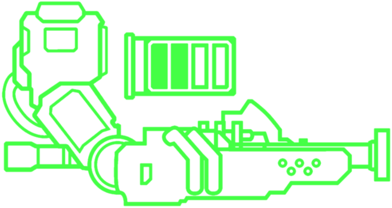
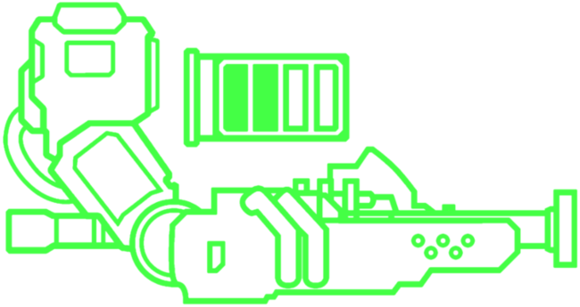

The core eject shotgun is pretty straightforward, left click for a shotgun shot with rather large spread and right click to charge up an explosive core that can then be shot by any hitscan weapon in the game. It is great for single target damage and health because it makes the enemies hit bleed a lot contrary to the pistol/revolver that gives little health. Contrary to the pistol, however, the left click isn't entirely useless as it possesses one of, if not, the best features in the entire game, projectile boosting which allows you to punch your own bullets when you fire the weapon. This requires somewhat good timing to get the punching windows; however, once learned and automated, it becomes second nature. an important thing to note about this feature is that at first it was a bug due to the way the shotgun was coded as it was simply a copy and paste from the swordsmachine code whose shotgun shots you can parry to send back to explode, Hakita found this so fun that he decided not to remove it and instead make it a fully fledged feature. Now for the alt fire, as I said, you can shoot the core with a hitscan, but there is a lot you can do with this such as shooting it with the malicious railcannon to create a nuke that deals insane amounts of damage that can one shot cerberus unfortunate enough to find themselves in the blast radius. However, you sadly cannot projectile boost it even if it's a non-hitscan projectile. NB: coin shots will target these if they are in the sight of the coin instead of going to the nearest enemy, but this will add damage to the explosion, this works both with a regular revolver coin shot, the electric railcannon but most fun is the malicious which will make an even stronger nuke. Now after this yapping, it's time to talk about the alt core eject, aka the jackhammer core eject. this weapon like the other jackhammers gains damage based on the player speed at the moment of impact through releasing a piston, this piston can transform the core eject into a hitscan explosion, however hitscan means that it can now hit coins, this means that you can create an orbital nuke if the coins are shot properly which is a lot of fun but essentially useless in regular play and only serves as a cool thing to do in the sandbox.
 

The pump charge has the same wide spread as the core eject but with the right click charging up the shotgun up to three times. when charged up twice, you receive no damage and get more pellets and a better projectile boost but if you charge it up thrice, the shotgun will explode when shot dealing 50 damage to you but also dealing a lot of damage to the enemies in the blast radius, this damage can be negated with a carefully timed dash to abuse the I-frames of it. The double charge plus knukleblaster can be used to one shot a maurice due to the big single target damage up close and the triple pump to gain good height for speedruns or even distance, though slam storage long jump or dash jump is more useful and doesn't have the downside of the potential damage taken. The jackhammer pump functions the same with each pump making it so the impact shot deals more damage and the third pump making an explosion. Overall, the pump jackhammer can be better suited for single target damage, though you lose out on projectile boosting and shotgun swapping depending on what other shotguns you have and in what slot it is. plus, the pump jackhammer, in particular, requires a lot more game knowledge and anticipation than the others as it has a higher potential for damage when charged but if you don't it kinda blows, but it's well the time to learn as it can be useful in the cyber grind to stun hideous masses with enough speed and a good hit on the tail.

The sawed off has actually a tighter spread compared to the other 2 shotguns with the same amount of damage. No one gives a shit about the damage of the left click, though as its worth is in the right click which charges up a chainsaw that's attached on a cable. When released, the chainsaw will launch off and come back to you dealing damage both ways to enemies in its path. The good thing is that this can be rebounded with the feedbacker, adding damage to the chainsaw, and this can be done infinitely many times stacking damage till the end of time. Using the knukleblaster, however, will instead detach the projectile and this will then bounce off a few surfaces before disintegrating. This broken off version can actually be included in saw-blade traps as it is magnetic and can also serve as a conductor for the jumpstart. the jackhammer variant is functionally the same, still keeping the more speed = more damage of the weapon, but for this the blast of the left click jackhammer can also serve as a means to rebound the chainsaw after it is fired, though it requires tighter timing due to the delay in the left click for these weapons.